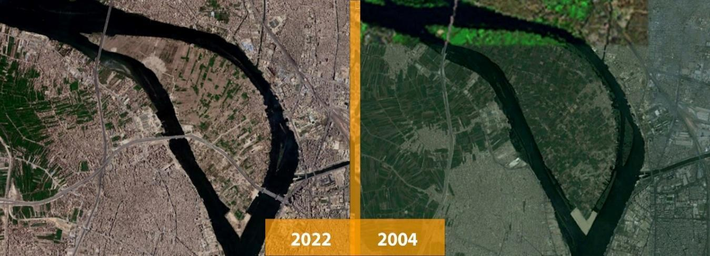

الزحف السكاني

اتسم العمران المصري منذ القدم بالتطور السريع سواء كان هذا التطور إيجابيًا أم سلبيًا، ولطالما كانت، وماتزال، العلاقة بين الكتلة الخرسانية “المنطقة المبنية وعناصر البناء ومكوناته” والمساحات الخضراء من أبرز سمات هذا التطور، وقد اتسم العمران المصري بعكسية هذه العلاقة لصالح الكتلة الخرسانية، خاصة في بداية النصف الثاني من القرن العشرين، حيث زادت مساحات الكتلة المبنية على حساب الأراضي الزراعية، وظلت المساحات الخضراء في تراجع مستمر، وكان لتطور هذه العلاقة أثرًا بالغًا في عدم استقرار درجات الحرارة والمساهمة بجزء كبير من عملية التغيرات المناخية عن طريق زيادة الانبعاثات المكونة للاحتباس الحراري.
أتذكر كيف كانت المناطق الزراعية في بداية الألفية الجديدة تُغطي مساحات واسعة من قريتي الريفية الواقعة في إحدى ضواحي مدينة المحلة الكبرى بمحافظة الغربية بنسبة تتعدى حوالي 70% من إجمالي مساحة القرية. وقتها لم يكن فصل الصيف شديد الحرارة، على عكس احساسي بالبرودة الشديدة في فصل الشتاء، فكان كل فصل من فصول السنة له اختصاصه الشعوري في القرية، حتى جرى لي ما جرى لأبناء الريف المصري الذين أودت بهم تيارات الهجرة الداخلية إلى العاصمة المركزية القاهرة، حيث حطت رحالي هناك في العشرين من عمري لاستكمال دراستي، وقتها بدأ الشعور بالاحترار يلازمني طوال معظم فصول السنة وليس في الصيف فقط. في هذا التوقيت كانت قريتي الريفية قد طرأ عليها ما طرأ على الريف المصري من زحف العمران والكتل الخرسانية على المناطق الزراعية، فتحولت الآن إلى منطقة شبه حضرية لا تُمثل فيها المناطق الزراعية أكثر من 10% من مساحتها، وكذلك هو الحال في القرى المجاورة. الآن أصبح الشعور بالاحترار يلازم سكان الريف طوال معظم فصول السنة، وتراجع الشعور بالبرد في فصل الشتاء، فقد أصاب مناخ الريف ما أصاب مناخ المناطق الحضرية. إذن، فثمة علاقة بين التطور الحضري ومعاملات الاحترار وتراجع المساحات الزراعية والخضراء، هذه العلاقة التي لم أفهمها إلا بعد دراستي للتخطيط العمراني ومعرفتي بالعوامل التي يؤثر فيها ويتأثر بها العمران.
أسباب الزحف العمراني
- انخفاض أسعار أجور المنازل في المناطق البعيدة عن المدينة، مما يدفع سكان المدينة إلى البحث عن الأماكن الأقل غلاءً.
- انخفاض نسبة الضرائب المفروضة في المناطق النائية بالمقارنة مع الضرائب المفروضة في المدينة.
- التضخم السكاني في المدن، مما يدفع السكان إلى الانتقال إلى الأماكن الأكثر هدوءاً.
- الرغبة بالابتعاد عن صخب المدينة والضوضاء.
أضرار الزحف العمراني
- نقص الأغذية: قد يؤدي استخدام الأراضي الزراعية لبناء المباني إلى نقص المساحات المخصصة لزراعة المحاصيل، مما يؤدي إلى نقص الغذاء المتاح للسكان.
- تدهور الأراضي: يمكن أن يؤدي البناء على الأراضي الزراعية إلى تدهور جودة التربة، مما يؤثر على إنتاجية المحاصيل ويجعلها غير صالحة للزراعة مستقبلاً.
- تلوث التربة والمياه: يمكن أن يتسبب استخدام المواد الكيميائية المستخدمة في البناء، مثل الأسمنت والدهانات، في تلوث التربة والمياه الجوفية، مما يؤثر على البيئة وصحة السكان.
- تغير المناخ: تعتبر الأراضي الزراعية جزءًا مهمًا من النظام الإيكولوجي للأرض، ويمكن أن يؤثر البناء عليها في تغير المناخ والتغيرات المناخية العالمية.
- انعدام الحياة البرية: يعتبر النظام الإيكولوجي للأراضي الزراعية موطنًا للعديد من الحيوانات والنباتات، ويمكن أن يؤدي البناء على هذه الأراضي إلى انعدام الحياة البرية في المنطقة.
- زيادة الاكتظاظ السكاني: قد يؤدي استخدام الأراضي الزراعية لبناء المباني إلى زيادة الاكتظاظ السكاني في المنطقة، مما يؤثر على جودة الحياة.
- ارتفاع التكاليف: قد يكون بناء المباني على الأراضي الزراعية أكثر تكلفة من البناء في مناطق أخرى، لأنه قد يتطلب توفير بنية تحتية وخدمات مختلفة للمنطقة.
- تقليل الجمالية الطبيعية: قد يؤدي البناء على الأراضي الزراعية إلى تقليل الجمالية الطبيعية للمنطقة، ويمكن أن يؤثر على السياحة والاستمتاع بالطبيعة.
- زيادة الازدحام المروري: قد يؤدي زيادة الاكتظاظ السكاني في المنطقة إلى زيادة الازدحام المروري، ويمكن أن يؤثر على حركة المرور وسلامة الطرق.
- تدهور الصحة العامة: يمكن أن يؤدي تلوث التربة والمياه إلى تدهور الصحة العامة للسكان في المنطقة، ويمكن أن يزيد من احتمالات الإصابة بالأمراض المعدية والأمراض المزمنة.
- تضييق مساحات الحياة البرية: قد يؤدي البناء على الأراضي الزراعية إلى تضييق مساحات الحياة البرية، مما يؤثر على الحيوانات والنباتات ويقلل من التنوع الحيوي.
- تغير الهوية الثقافية: قد يؤدي زيادة الاكتظاظ السكاني وتغير المناظر الطبيعية إلى تغير الهوية الثقافية للمنطقة، وقد يؤثر على العادات والتقاليد والتراث المحلي.
- زيادة الطلب على الموارد الطبيعية: يمكن أن يؤدي زيادة الاكتظاظ السكاني في المنطقة إلى زيادة الطلب على الموارد الطبيعية، مثل المياه والغذاء والطاقة، مما يزيد من الضغط على هذه الموارد في المنطقة.
- زيادة المخاطر البيئية: يمكن أن يؤدي البناء على الأراضي الزراعية إلى زيادة المخاطر البيئية، مثل حدوث الفيضانات والانزلاقات الأرضية، نتيجة لتغيرات في النظام الإيكولوجي للأرض.
- تأثير على الاقتصاد المحلي: قد يؤدي استخدام الأراضي الزراعية لبناء المباني إلى تأثير على الاقتصاد المحلي، حيث يمكن أن يؤدي إلى تغيير في المناظر التجارية والصناعية وزيادة التشغيل وتقليل فرص العمل في القطاع الزراعي.
الجزر الحرارية
تتجه أنظار العالم حاليًا نحو الخطر الداهم الذى يلوح في أفق سطح الكرة الأرضية والمتمثل في التغيرات المناخية، ومن أبرز سماتها في زيادة معدلات الاحترار العالمي وزيادة درجات الحرارة في فصل الصيف عن المعدلات الطبيعية، وكذلك الشعور بالدفء في فصل الشتاء مع ارتفاع في درجات الحرارة الصغرى على غير المعتاد. كما ذكرت سابقًا، ثمة علاقة وطيدة بين التغيرات المناخية وتطور العمران ذات أشكال ونتائج متعددة، إلا أن ظاهرة الجزر الحرارية الحضرية تُمثل واحدة من أهم نتائجها، والتي تنشأ نتيجة لزحف الكتلة الخرسانية على المناطق الزراعية. يشير مُصطلح الجزر الحرارية Urban Heat Island – UHIإلى اختصاص الغلاف الجوي لمنطقة ما بخصائص معينة تختلف عن خصائص المناطق المجاورة، وتتمثل هذه الخصائص في تغيرات تطال درجات الحرارة والرطوبة، وتكون هذه التغيرات نتيجة اختلاف المكونات البيئية لهذه المنطقة عن نظيرتها في المناطق المجاورة، ويشير مصطلح شدة الجزيرة الحرارية السطحية Surface Urban Heat Island – SUHI إلى الفرق في درجة الحرارة بين سطح الأرض في منطقة حضرية ما ومثيلتها في ظهيرها الزراعي.
يمكن شرح ظاهرة الجزر الحرارية الحضرية عبر المثال البسيط التالي: لنفرض أنه لدينا مدينة يحيط بها زمام زراعي “حزام أخضر” ويلي هذا الحزام شريط من المباني بارتفاع طابقين، ويلي هذا الشريط شريط آخر من المباني بارتفاع أربعة طوابق وبنفس المساحة، وفي منتصف المدينة مساحة من المناطق الخضراء، بالنظر إلى درجات الحرارة في هذه المنطقة فسنجد ثلاث درجات متفاوتة “مؤشر شدة الجزيرة الحرارية”. أولاً، سنجد درجة حرارة معتدلة في المساحات الخضراء، بينما في المنطقة المكونة من ارتفاع طابقين سنجد زيادة في كبيرة في درجة الحرارة، أما في المنطقة المكونة من ارتفاع أربعة طوابق ستتضاعف درجة الحرارة، ثم تعود للاعتدال في المنطقة الخضراء في المنتصف. إذن، من الواضح أن شدة الجزيرة الحرارية الحضرية تتأثر بشكل مباشر بحجم الكتلة العمرانية التي تتناسب معها طرديًا، وكذلك مواد البناء المستخدمة مثل الطوب والأسمنت والحصى، وكذلك حجم الأسفلت في الطرق العامة وحجم وسائل المواصلات.
للجزر الحرارية الحضرية خطر بالغ عند زيادة ظاهرتها، ينعكس في المقام الأول على صحة الإنسان، حيث تتمثل هذه الظاهرة في ارتفاع درجات الحرارة بشكل كبير، الأمر الذي يسبب الإصابة بالإجهاد الحراري، كذلك ينعكس على جودة الهواء مكونًا العوادم السامة والجزيئات الصغيرة التي تعمل على تلوث الهواء، والتي تنعكس على الإنسان عبر إصابته بأمراض الربو والجهاز التنفسي، كذلك تعمل زيادة معدلات الاحترار على زيادة معدلات استهلاك الطاقة واستخدام مكيفات الهواء، وتقليل حركة المشي وزيادة استخدام وسائل المواصلات، الأمر الذي ينعكس بالسلب على البيئة ويعمل على زيادة الانبعاثات المسببة للاحتباس الحراري. بالتالي ينعكس هذا الضرر بالسلب على قطاعين أساسيين في حقوق الإنسان، وهما الحق في التمتع بصحة جيدة، والحق في بيئة نظيفة.
الخلفية التاريخية لفقدان مصر مساحات كبيرة من الأراضي الزراعية
تُعتبر الأراضي الزراعية بمصر أحد أهم العوامل والمقومات الاقتصادية، حيث كانت الزراعة هي الاهتمام الأول لمحمد علي والي مصر، وأبنائه من بعده، وكان للتحول الجمهوري الذي شهدته مصر في منتصف القرن العشرين أثرًا كبيرًا في تغيير هيكل الأراضي الزراعية، نتيجة لتتابع قوانين الإصلاح الزراعي، وهنا تجدر الإشارة إلى موسوعة “شخصية مصر” لجمال حمدان وبحثه في تفتت الملكية الزراعية عن طريق التوريث، في ظل غياب القوانين التي تُجرم تغيير استعمال الأرض الزراعية أو البناء عليها.
شهدت مصر تطورًا هائلًا في تراجع حجم الأراضي الزراعية في أعقاب ثورة 25 يناير عام 2011، نظرًا لحالة الانفلات الأمني التي صاحبتها، كما كان يحدث وقت كل حدث سياسي في مصر مثل الانتخابات البرلمانية، و تغاضي الجهات الرقابية وقتها عن المخالفات، خاصًة مخالفات البناء، ونظرًا إلى ضخامة الحدث في يناير 2011 وتعطيل أي دور للأجهزة الرقابية، استغل الكثير من المواطنين هذا الحدث بالبناء على الأراضي الزراعية التي يملكونها، حيث وصلت نسبة المخالفات الناتجة عن البناء على الأراضي الزراعية في الفترة الممتدة من 25 يناير حتى 8 فبراير عام 2011، إلى 31.128 ألف مخالفة، كما أصدرت الإدارة المركزية لحماية الأراضي الزراعية بوزارة الزراعة تقريرًا كشفت فيه أن مصر فقد خلال الثلاثين عام التي سبقت ثورة يناير ما يقرب من 760 ألف فدان (3075.61 كم2)، منها 350 ألف فدان (1416.4 كم2) خلال العشرية الأولى من الألفية الثالثة.
تحولت بعض المناطق الزراعية في مصر إلى مناطق حضرية بالكامل، يتضح ذلك من الشكل أدناه، والذي يحتوي على صور فضائية لمنطقة جزيرة الوراق بمحافظة الجيزة، الصورة الأولى للجزيرة عام 2004، والأخرى لنفس المنطقة عام 2022، وهي إحدى الجزر المصرية، وتبلغ مساحتها حوالي 1500 فدان، ويغلب عليها النشاط الزراعي. تبين الصورة الفضائية عام 2004 أن معظم استعمالات الأراضي بجزيرة الوراق والمناطق المحيطة بها على الجانب الآخر من نهر النيل، هي استعمالات زراعية، ويغلب على الجزيرة زراعة الموز والبطاطس والذرة والخضروات، ويعمل سكان الجزيرة في نشاطين أساسيين هما الزراعة والصيد. عانت هذه الجزيرة من محاولات عديدة للقضاء عليها وعلى أنشطتها، فتوازيًا مع الزحف العمراني على أراضيها الزراعية من قبل الأهالي عبر البناء المخالف، كان هناك الكثير من المحاولات الحكومية للسيطرة على أرض الجزيرة وتحويلها إلى منطقة أعمال إدارية، فبدل أن تقوم بالحفاظ على الأراضي الزراعية بها، أقامت عددًا من الشركات التي قضمت مساحاتها الخضراء. على الرغم من صدور قرار عام 1998 تُصبح جزيرة الوراق بموجبه محمية طبيعية، صدر قرار حكومي آخر عام 2001 يقضي باعتبار أراضي الجزيرة “منفعة عامة”، وبدأت بموجبه عمليات نزع الملكية من الأهالي، مما أفقد الجزيرة جزءًا كبيرًا من نشاطها الزراعي وتسبب في إهمال أراضيها، إلا أن عددًا كبيرًا من الأهالي ظل محافظًا على النشاط الزراعي كما هو. في عام 2017، بدأت قوات الأمن المصرية بمهاجمة أهالي الجزيرة لإخلائهم منها والاستيلاء عليها لتحويلها إلى منطقة أعمال إدارية “جزيرة حورس” لتشارك الدولة صراحة في عمليات قضم المساحات الخضراء، وتظهر في الصورة أدناه المنطقة عام 2022 وقد تم الزحف العمراني على كامل الأرض الزراعية بجزيرة الوراق والمناطق المحيطة بها.

انعكاس تراجع الأراضي الزراعية والمساحات الخضراء على تطور الجزر الحرارية الحضرية
ذكرنا سابقًا أن ثمة علاقة وطيدة بين تراجع المساحات الزراعية نتيجة الزحف العمراني على المساحات الخضراء والجزر الحرارية الحضرية، ففي دراسة أُجريت على بعض مدن محافظات الدلتا، تَبين أن المناطق الحضرية أشد احترارًا من المناطق الزراعية المتاخمة لها، نتيجة عدة عوامل أهمها تفاعل أشعة الشمس مع الكتل المشكلة للمناطق الحضرية مثل الإسمنت والأسفلت والمعادن. هذه التفاعلات تقل حدتها بالطبع في المناطق ذات المسطحات الخضراء، التي تتسم بتربة خاصة لا تعكس أشعة الشمس المُمتصة في صورة موجات حرارية إنما تمتص جزء كبير من هذه الأشعة وتستهلكها في عمليات التبخر وتتحول إلى حرارة كامنة داخل مكونات بخار الماء، حيث كان متوسط درجات الحرارة عام 2013 في مدن محافظات الدلتا نهارًا 21.1 درجة وكان المتوسط في الظهير الزراعي 20.4 درجة، وفى الليل كان متوسط درجات الحرارة في هذه المدن 13.6 درجة وفي الظهير الزراعي كان المتوسط 10.2 درجة. أظهرت الدراسة أيضًا أن عامل الانبعاثات الحرارية الناتجة عن النشاط البشري يُساهم بشكل رئيسي في تكوين الجزر الحرارية في المناطق الحضرية مثل المنشآت الصناعية ووسائل النقل ومحطات توليد الطاقة وأنشطة استهلاكها ووسائل التبريد والتدفئة، بينما الظهير الزراعي في غِنى عن هذه الوسائل فلا يحتاج سوى أشعة الشمس، وبالتالي تنخفض الانبعاثات الناتجة عن النشاط البشري داخله.
كذلك أُجريت دراسات على كل من مدينة طنطا عاصمة محافظة الغربية بدلتا مصر، ومدينة الزقازيق عاصمة محافظة الشرقية، وهما محافظتان يغلب عليهما النشاط الزراعي، وتم قياس مدى تطور الجزر الحرارية بهما في فترات زمنية متفاوتة بين أعوام 1984 و 2015، وتعد المدينتين من المدن التي تتسم بظهير زراعي كبير، وقد جرى على هذا الظهير ما جرى لباقي مدن مصر من تآكل الرقعة الزراعية وزحف العمران عليها، حيث شهدت مدينة طنطا تزايدًا في حجم المناطق العشوائية وصل إلى 680 فدان (2.75 كم2) عام 2013، كما فقدت المدينة نحو 711 فدان (2.877 كم2) من الأراضي الزراعية في أعقاب ثورة يناير عام 2011، وعلى مدار 66 عام فقدت المدينة نحو 4818.6 فدان (19.5 كم2) من مساحتها الزراعية، حيث ارتفعت الجزيرة الحرارية من 31.7 درجة عام 1984 إلى 38.4 درجة عام 2015، وسُجلت أكبر قيمة لدرجة حرارة سطح الأرض عام 1984 عند نحو 37.53 درجة، بينما بلغت أكبر قيمة عام 2015 47.0014 درجة، وفي مدينة الزقازيق بلغت الكتلة العمرانية عام 1986 نحو 1810.6 فدان (7.3272 كم2)، ثم زادت وتيرة التوسع العمراني على الأراضي الزراعية عام 2016 حتى وصلت الكتلة العمرانية إلى 2790.8 فدان (11.294 كم2)، وبتتبع معدلات الجزر الحرارية الحضرية في المدينة على فترات زمنية متباينة، بلغت شدة الجزيرة الحرارية عام 1986 نحو 32.9 درجة، بينما وصلت إلى 38.1 درجة عام 2018.
تشابهت نتائج الدراسات في الأسباب المؤدية لتنامي ظاهرة الجزر الحرارية الحضرية، ووضحت الدراسات العلاقة بين زيادة الكتلة العمرانية وتناقص المساحة المزروعة، ووجدت انعكاس تلك العملية على زيادة معدلات الجزر الحرارية، إضافة إلى النشاط البشري والانبعاثات الناتجة عنه، والذى ربطت الدراسات بينه أيضًا وبين زيادة الكتلة العمرانية على حساب الأراضي الزراعية، فكلما زاد العمران وزادت الكتل الخرسانية زادت معها درجات الحرارة وكانت الحاجة البشرية ملحة إلى استخدام وسائل التبريد، كما تعمل زيادة درجات الحرارة على تقليل رغبة الإنسان في المشي فيلجأ إلى استخدام وسائل النقل، بالتالي تزيد نسبة الانبعاثات الناتجة عن النشاط البشري.
ما العمل إذن؟
إن ما تشهده مصر من تغير ملحوظ في معدلات الاحترار والمتمثل في الارتفاع الشديد في درجات حرارة الصيف، والشعور بالأجواء الحارة أيضًا في فصلي الخريف والربيع وكذلك الشعور بالدفء في فصل الشتاء، هو أحد انعكاسات التوسعات العمرانية ومكوناتها الخرسانية مقابل التراجع في المساحات الخضراء والمناطق الزراعية، الأمر الذي نتج عنه زيادة كبيرة في مؤشرات الجزر الحرارية، مما لعب دورًا كبيرًا في زيادة الحاجة البشرية إلى استخدام وسائل النقل، الأمر الذي تسبب في زيادة الانبعاثات الناتجة عن النشاط البشري.
إن التصدي لارتفاع معدلات الجزر الحرارية الحضرية هو عمل مشترك بين الحكومات والمواطنين، فيقع على عاتق الحكومة تعويض الفاقد من الأراضي الزراعية، والعمل الجاد على زيادة الأراضي المستصلحة وتوطين المشروعات العمرانية الجديدة بأماكن ذات ظهير زراعي مستصلح. كما بات التوقف عن توطين المشروعات العمرانية على حدود المدن الكبرى أمرًا ضروريًا، ولابد من مراعاة المساحات الخضراء أثناء وضع المخططات العامة والتفصيلية للمناطق الحضرية الجديدة، حيث لم يعد هناك اهتمام بتخطيط مساحات خضراء داخل المدن إلا في المشروعات الاستثمارية التي تدر أرباحًا كبيرة للحكومة، أما في منطقة مثل الأسمرات التي يتم توطين سكان العشوائيات بها، فإنها تخلو تمامًا من أي من المناطق الخضراء والأشجار. توازيًا مع مراعاة المناطق الخضراء في المدن الجديدة لا بد من التوقف عن تجريف هذه المساحات في المدن القائمة، فخلال ثلاثة سنوات مضت أصبحت القاهرة خاوية من معظم مساحاتها الخضراء، فقد دأبت الحكومة المصرية على عمليات قطع الأشجار من الطرق العامة لصالح زيادة المساحة الإسفلتية، حيث فقدت منطقة مصر الجديدة بمحافظة القاهرة نحو 90 فدان (364217 متر مربع) من مساحاتها الخضراء لصالح توسعة الطرق العامة.
لم يكن مشروع توسعة الطرق العامة وحده من يقضي على أشجار مصر، بل شرعت الحكومة المصرية في مشروع تبطين الترع، وهو أحد المشروعات القومية لوزارة الري والموارد المائية المصرية، ويهدف المشروع إلى المحافظة على مياه النيل وعدم إهدارها عن طريق تبطين الترع المائية وحدودها بطبقة إسمنتية، إلا أن هذا المشروع كان أحد المشاريع التي ارتكزت على قطع الأشجار المزروعة على حواف الترع وجعل مصر تفقد آلاف الأشجار على جميع حواف الترع التي تم تبطينها. كذلك أُزيلت العديد من الأشجار على حواف الترع التي يتم تطهيرها في القرى بحجة إعاقتها لعملية التطهير تلك، وقد صرّح أحد المسئولين الحكوميين أن عمليات قطع الأشجار تأتي تنفيذًا للسياسات العامة للدولة وأن من يعترض على القرار ستتم مساءلته قانونيًا.
على الرغم من أن المسؤولية الأكبر لمجابهة ظاهرة زيادة الجزر الحرارية الحضرية تقع على عاتق الحكومة، لأنها المالك الوحيد للمساحات العامة وهي المعنية بتشريع وتنفيذ القوانين، وهي من يتهاون بحق تجريف الأراضي الزراعية ويأمر بالقضاء على الأشجار واستبدالها بمساحات إسمنتية، إلا أن المواطنين يستطيعون المشاركة في مجابهة هذه الظاهرة والتخفيف من حدتها عن طريق الحد من استخدام وسائل المواصلات مثل السيارات في غير الضرورة، والاعتماد على المشي واستخدام الدراجات الهوائية، والذي تنعدم معهما الانبعاثات المسببة لظاهرة الاحتباس الحراري، كذلك بإمكانهم زراعة أسطح ومحيط المنازل قدر الإمكان، وتقليل استخدام الطاقة ومكيفات الهواء قدر المُستطاع، والاعتماد على وسائل الإنارة الطبيعية وقت النهار، ومراعاة تقليل الإضاءة ليلًا. إبراهيم عز الدين معماري مصري وباحث عمراني، يعمل كباحث في ملف الحق في السكن الملائم بالمفوضية المصرية للحقوق والحريات ومناهض لعلميات الإخلاء القسري، ومدير مبادرة مناخ للدراسات البيئية ومؤسس ديوان العمران للدراسات العمرانيه.